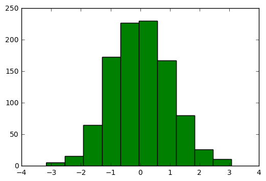
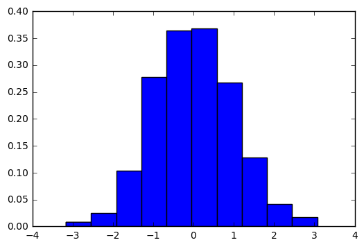
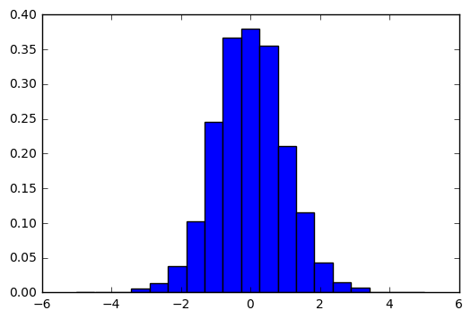
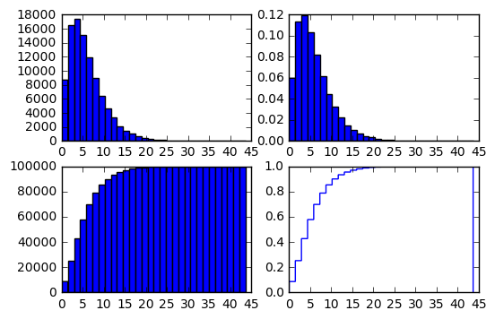

Jupyter QtConsole 4.2.1
Python 3.5.2 |Anaconda 4.2.0 (64-bit)| (default, Jul 5 2016, 11:41:13) [MSC v.1900 64 bit (AMD64)]
Type "copyright", "credits" or "license" for more information.
IPython 5.1.0 -- An enhanced Interactive Python.
? -> Introduction and overview of IPython's features.
%quickref -> Quick reference.
help -> Python's own help system.
object? -> Details about 'object', use 'object??' for extra details.
In [1]: #histograms
In [2]: #hist function from plt
In [3]: import matplotlib.pyplot as plt
In [4]: import numpy as np
In [5]: x = np.random.normal(size=1000)
In [6]: plt.hist(x)
Out[6]:
(array([ 5., 16., 65., 173., 227., 230., 167., 80., 26., 11.]),
array([-3.16333345, -2.53967267, -1.91601189, -1.29235112, -0.66869034,
-0.04502956, 0.57863121, 1.20229199, 1.82595277, 2.44961354,
3.07327432]),
<a list of 10 Patch objects>)
In [7]: plt.hist(x);
In [8]: plt.show()

In [9]: #by defalut hist uses 10 bins and tries to optimize both bin head and location.
In [10]: plt.hist(x, normed=True)
Out[10]:
(array([ 0.00801718, 0.02565497, 0.10422333, 0.27739439, 0.36397992,
0.36879023, 0.26777377, 0.12827486, 0.04168933, 0.01763779]),
array([-3.16333345, -2.53967267, -1.91601189, -1.29235112, -0.66869034,
-0.04502956, 0.57863121, 1.20229199, 1.82595277, 2.44961354,
3.07327432]),
<a list of 10 Patch objects>)
In [11]: plt.show()

In [12]: # y azis, instead of number of observations that fall in each bin we have the proportion of obeservation that falls in each bin
In [13]: %matplotlib inline
In [14]: plt.show(x, normed=True, bins=np.linspace(-5,5,20))
---------------------------------------------------------------------------
TypeError Traceback (most recent call last)
<ipython-input-14-494ba5f2aaae> in <module>()
----> 1 plt.show(x, normed=True, bins=np.linspace(-5,5,20))
C:\Users\azazel\Anaconda\lib\site-packages\matplotlib\pyplot.py in show(*args, **kw)
250 """
251 global _show
--> 252 return _show(*args, **kw)
253
254
TypeError: show() got an unexpected keyword argument 'normed'
In [15]: plt.hist(x, normed=True, bins=np.linspace(-5,5,20))
Out[15]:
(array([ 0. , 0. , 0. , 0.0057, 0.0133, 0.038 , 0.1026,
0.2451, 0.3667, 0.38 , 0.3553, 0.2109, 0.1159, 0.0437,
0.0152, 0.0076, 0. , 0. , 0. ]),
array([-5. , -4.47368421, -3.94736842, -3.42105263, -2.89473684,
-2.36842105, -1.84210526, -1.31578947, -0.78947368, -0.26315789,
0.26315789, 0.78947368, 1.31578947, 1.84210526, 2.36842105,
2.89473684, 3.42105263, 3.94736842, 4.47368421, 5. ]),
<a list of 19 Patch objects>)

In [15]:
In [16]: #gamma distributions
In [17]: x = np.random.gamma(2,3,100000)
In [18]: plt.figure()
...: plt.subplot(221)
...: plt.hist(x, bins = 30)
...: plt.subplot(222)
...: plt.hist(x, bins = 30, normed=True)
...: plt.subplot(223)
...: plt.hist(x, bins = 30, cumulative=30)
...: plt.subplot(224)
...: plt.hist(x, bins = 30, normed=True, cumulative=True, histtype="step")
...:
Out[18]:
(array([ 0.08691, 0.25252, 0.42685, 0.5778 , 0.69762, 0.78754,
0.85244, 0.8995 , 0.93259, 0.95411, 0.96895, 0.97901,
0.98615, 0.99096, 0.99399, 0.99603, 0.99726, 0.9982 ,
0.99877, 0.9992 , 0.99947, 0.99964, 0.99974, 0.99983,
0.99991, 0.99994, 0.99995, 0.99996, 0.99998, 1. ]),
array([ 1.05145801e-02, 1.46623148e+00, 2.92194837e+00,
4.37766527e+00, 5.83338216e+00, 7.28909906e+00,
8.74481595e+00, 1.02005328e+01, 1.16562497e+01,
1.31119666e+01, 1.45676835e+01, 1.60234004e+01,
1.74791173e+01, 1.89348342e+01, 2.03905511e+01,
2.18462680e+01, 2.33019849e+01, 2.47577018e+01,
2.62134187e+01, 2.76691356e+01, 2.91248525e+01,
3.05805694e+01, 3.20362863e+01, 3.34920032e+01,
3.49477201e+01, 3.64034370e+01, 3.78591539e+01,
3.93148708e+01, 4.07705876e+01, 4.22263045e+01,
4.36820214e+01]),
<a list of 1 Patch objects>)

In [19]: